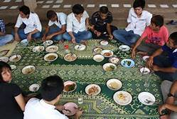
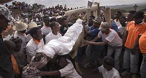
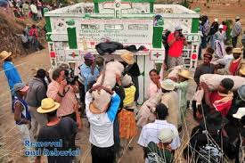

The many inseparables)
As Mahanoro is one of the Betsimisaraka cities, the culture is a bit different from other tribes.
Apart from their interesting language, there are several customs and traditions that the local people maintain and are really strict about.
Most people here never use the real table when eating becaus that is what they used to be. Instead, they use mats and everyone sits around the mats when the meal-time is coming. It is kind of taboo or rude to step on the mat even unintentionally.

Among some
Betsimisaraka it is considered fady for a brother to shake hands with his sister, or for young men to wear shoes during their father's lifetime.
However, it is no longer common in Mahanoro.
Among many Betsimisaraka , the eel is considered sacred. It is forbidden to touch, fish or eat eel. Although many coastal Malagasy communities have a fady against the consumption of pork, this is not universal or common among the Betsimisaraka, who often keep pigs in their villages.
The Betsimisaraka practice famadihana (reburial) and sambatra (circumcision) and believe in sorcery and a wide range of supernatural forces. Many taboos and folktales revolve around lemurs and crocodiles, both of which are common throughout Betsimisaraka territory.

This shows how they dance with the wrapped dead people at the end of ceremonie at the tomb.

See the older posts →